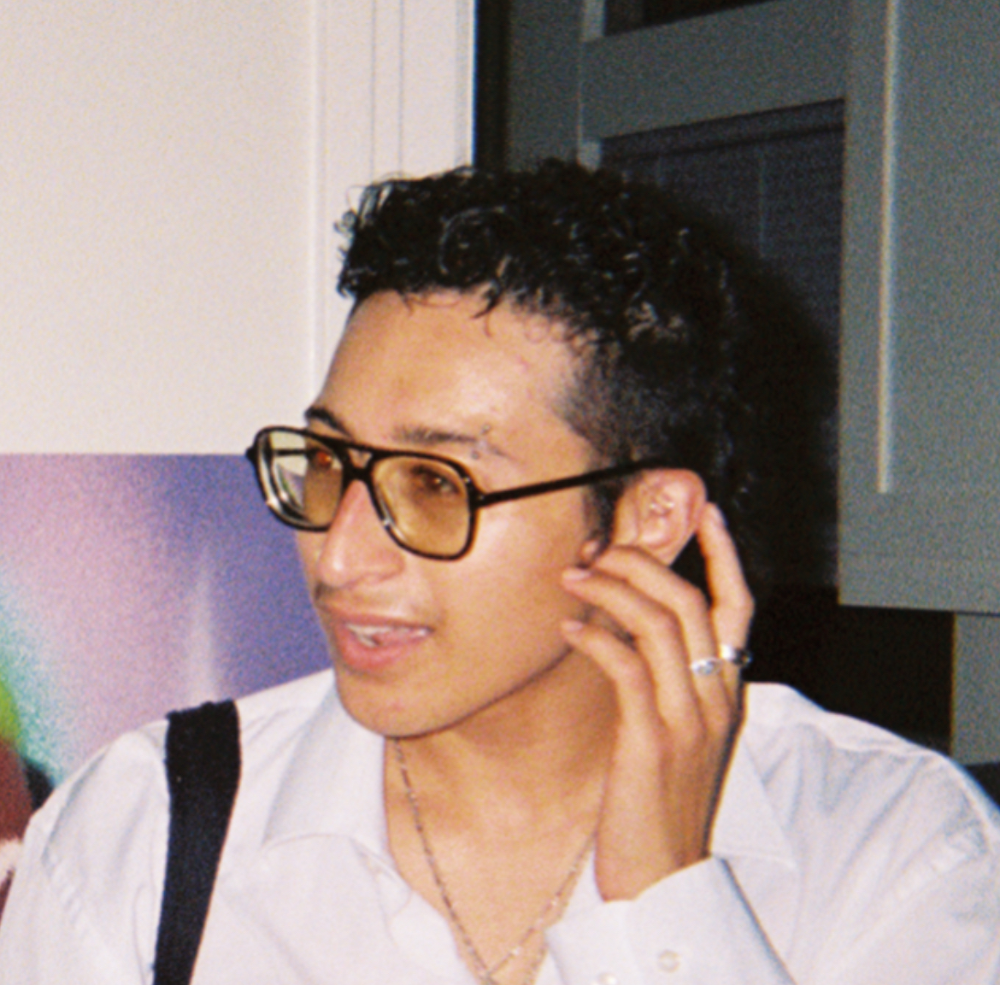

AZAD NAMAZIE
About
Azad Namazie (they/them) is a writer, artist, and digital archivist from Los Angeles, CA.
Their practice interweaves poetry, performance, and code to explore the mythologies we transmit to one another and what they tell us about secrecy and desire in the shadow of empire. Azad's performance work has been featured at Celebration Theatre, Zephyr Theatre, and Hollywood Fringe Festival, while their poetry has appeared in Mizna Journal, About Place Journal, and FRUITSLICE, among others. Their plays include Another Birth (commissioned and produced by Celebration Theatre & Greenway Arts Alliance) and LOCAL PROPHETS: A Play of Near Collisions (The Joy Who Lived Festival 2025). Other theatrical credits include dramaturgy for Memory Lane is a Desert Road (8 Ball Theatre) and curation of a pre-show archival exhibition for A Third Space (Hollywood Fringe Festival 2024).
Azad is dedicated to supporting artists and grassroots organizations to design sustainable digital archives programs to autonomously preserve and defend their materials from digital loss, extraction, and proprietary systems. They have processed, preserved, and made accessible audiovisual and born-digital collections at the Los Angeles County Museum of Art, Viet Rainbow of Orange County, and Skid Row History Museum. They are a digital archivist at UCLA Library.
This website was hand-coded in html/css and has no tracking or analytics.